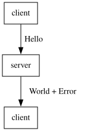

- A collection of nodes represents actors. In other words:
nodes : List Actor. - Each actor has an id. In other words, there is a function
id : Actor → Id. - Each actor has an index in the list of actors. In other words, there is a function
index : Actor → Index. - We say that two actors are equal in the list if they have the same ids, i.e.,
id(a1) = id(a2). - Actors may be repeated in the list, i.e., it might be the case that
id(a1) = id(a2) ∧ index(a1) ≠ index(a2). - An edge
x —[t:AType]→ ymeans that the nodeyhas received the messaget, which is a data structure of typeAType. In other words:edge(x y t) : Edgeandedges : List Edge. - We consider that two edges are equal if they start and end on the same nodes and transport the same
message. In other words, given
e1 ≡ edge(start1 end1 t1)ande2 ≡ edge(start2 end2 t2), we say thate1 = e2iffstart1 = start2 ∧ end1 = end2 ∧ t1 = t2. - The list of edges has no repetition.
- Given
a1,a2two actors ofnodes, we say thata < biff there is an edgee ≡ edge(a b t)for somet. < : Node Node → Propforms a strict partial order on the nodes.- Given nodes and edges,
(nodes,edges) : ActorCompis an actor computation.
If :
clientrepresents some client, for instance your web browser;Hellorepresents aHTTPrequest, for instance aPOSTrequest with data set to aJSONlike{"type": "hello"}WorldandErrorare also HTTP requests;serverrepresents some web server.
Then : we may represent the discussion
between the client and the server by an actor computation graph as follows:

Translated into English, a possible associated dialogue may be:
- The server received an instance of a
Hellomessage from the client. - The client received an instance of one of these two message types from the server:
WorldorError.